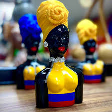

Cerámica Tradicional
Por: Doña Rosa Méndez
Piezas únicas moldeadas a mano con técnicas ancestrales, utilizando arcilla local y pigmentos naturales.
Desde $25.000
Descubre el talento de nuestros artesanos y llévate un pedazo de nuestra cultura
Por: Doña Rosa Méndez
Piezas únicas moldeadas a mano con técnicas ancestrales, utilizando arcilla local y pigmentos naturales.
Desde $25.000
Por: Taller Oro Viejo
Piezas únicas en materiales reciclados, inspiradas en la flora y fauna de nuestra región.
Desde $18.000
Por: Taller Son del Pueblo
Guitarras, tiples y maracas fabricadas con maderas locales, siguiendo métodos tradicionales.
Desde $120.000